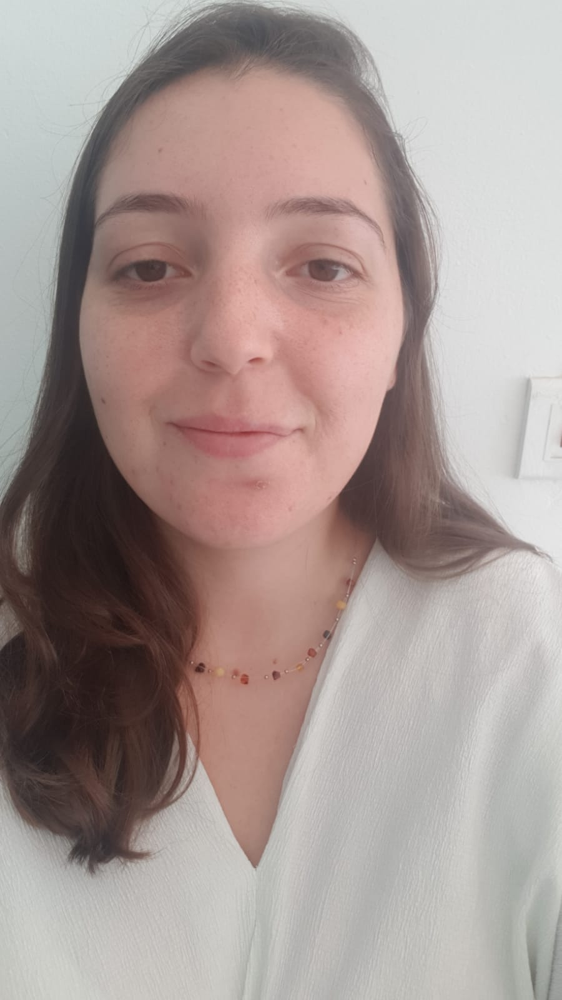

יוצרת רדיו
שיר גוטליב
מילים הן הנכס הגדול ביותר שלנו. מייד אחרי הנראות הפיזית שלנו יגיעו המילים ויעצבו את התפיסה של הסביבה עלינו ויביעו את מי שאנחנו.

אודות
אני יוצרת רדיו בהתמקדות בתוכניות מוזיקה אקטואליות ובתוכניות עומק מוזיקליות. יש בי תשוקה למציאת סיפורים במקומות בלתי צפויים ועיצוב ראיונות גולמיים והקלטות שטח לפרקים מלוטשים ומרתקים. הפקתי תוכניות עבור תחנות קמפוס ותחנות עצמאיות, תוך עבודה בכל שלבי ההפקה — מחקר, ראיונות, עריכה ועיצוב סאונד. מקומי נמצא ברדיו ודרכי רק החלה.
תוכניות
מבחר פרקים שהופקו. לחצו על נגן כדי להאזין.